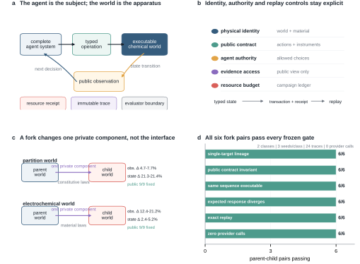
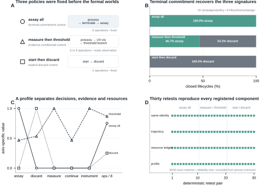
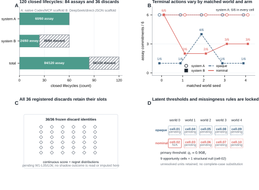
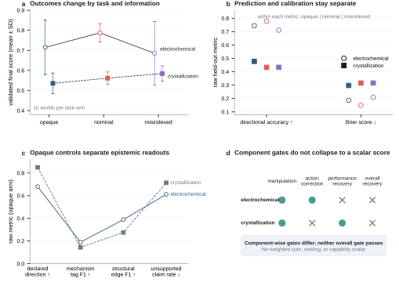
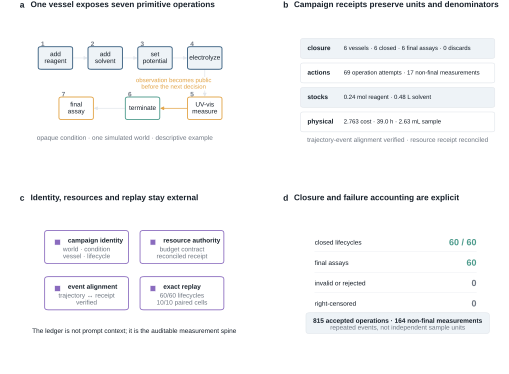
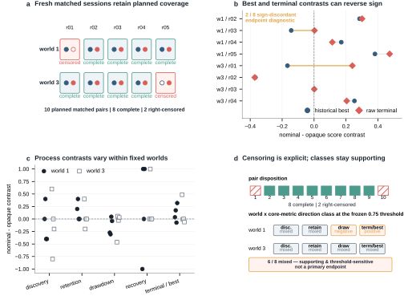

1. Introduction
When a scientific agent reports a high-performing condition, the consequential question is not only what endpoint did it reach? but also what experimental process produced that endpoint? A condition may be found early and retained, abandoned after discovery, recovered after a drawdown, or reached only at termination. Likewise, two closed lifecycles can differ in whether the agent acquired evidence, continued to invest resources, requested a final assay, or explicitly discarded the material. These differences are experimentally meaningful even when terminal values appear similar.
Existing evaluation regimes expose different parts of this problem. Prediction and digital optimization benchmarks enable controlled comparison but often represent an experiment as a value-returning query [@felton2021summit; @hase2021olympus]. Self-driving laboratories and instrument-operating agents establish whether workflows can be executed in physical systems and automated reliably [@szymanski2023alab; @dai2024mobile; @darvish2025organa; @vriza2026instruments]. That physical validity is indispensable, yet physical apparatuses are costly to replicate under matched identity, and endpoint-centered benchmarks do not by themselves isolate the agent's evidence, resource, and termination policies. A complementary measurement apparatus is needed in which experimental state, information, authority, resources, and replay identity are explicit controls.
ChemWorld provides that apparatus through executable chemical and chemical-engineering worlds. Its organizing choice is that the complete agent system is the experimental subject and the chemical world is the measurement apparatus. Within a stateful, partially observable simulator world, an agent chooses typed state-changing operations, measurements, resource expenditure, termination, final assay, and discard. Accepted transitions, failures, instrument responses, and ledger events are content-bound, so an environment trajectory and its resource history can be replayed exactly without claiming reproduction of model tokens or of a physical material batch.
Programmability turns this environment from a fixed benchmark into a controlled instrument. ChemWorld can fork one registered private component while holding nine public-contract components fixed and recording parent--child lineage. The present paper qualifies two named intervention classes rather than arbitrary recombination: six parent--child pairs across three seeds produced the registered divergence under the same fixed-policy action sequence, with exact original/replay agreement and no provider calls. This certificate establishes controlled programmability of the virtual apparatus, not agent adaptation to changed laws.
A measurement apparatus must also recover behavior that is known before observation. We therefore froze three deterministic policies with distinct evidence-acquisition, resource, and terminal-decision signatures, then evaluated a 5 × 2 × 3 matrix. The 30 primary campaigns and 180 primary closed lifecycles passed all 12 registered construct, discriminant, resource, invariance, and non-degeneracy gates. A separate 30-campaign deterministic retest reproduced every registered campaign identity and profile; those retests assess reliability and do not double the primary estimand. This positive control licenses interpretation of ChemWorld's profile axes while remaining silent about stochastic-agent reliability or laboratory generalization.
We next use the apparatus as a descriptive lens on complete experimental systems and on previously frozen controls. Two distinct complete agent systems each closed 60 lifecycles in the same five worlds and two information arms, yielding 120 closed lifecycles: 84 final assays and 36 explicit discards. Their terminal-policy census, instrument use, operations, and resource histories remain separate readouts rather than a model-only ranking. Because discard quality is not observed at decision time, a preregistered evaluator-only counterfactual audit attempted to score all 36 discard states. Only 6 passed the formal resolution gate and 30 remained unresolved. We retain the complete registered census, report censoring and sharp support bounds, and withhold latent-dependent point estimates and arm contrasts.
Two further evidence layers show why this separation matters. Compiled controls across two task families keep endpoint outcome, held-out prediction, calibration, and claim diagnostics distinct rather than collapsing them into a composite score. Fresh sessions in two deliberately selected worlds expose within-world process variation: best-of- campaign and raw-terminal contrasts have discordant signs in 2/8 complete matched pairs, whereas a thresholded trajectory classification is mixed in 6/8 and is treated only as supporting sensitivity evidence. These selected worlds provide a process diagnostic, not a population-level comparison between systems.
Together, the evidence follows a staged argument: executable contracts define what can be controlled and observed; controlled forks qualify programmability; known policies establish measurement validity; complete systems demonstrate that lifecycle closure does not specify terminal policy; and compiled and fresh-session analyses separate additional outcome and process coordinates. We make four contributions:
- a qualified virtual chemical-world apparatus with typed experimental operations, explicit instruments, failures, resources, terminal decisions, content-bound identity, and exact environment replay;
- controlled, single-private-component world forks with fixed public contracts and an independently auditable lineage and replay certificate;
- a multidimensional experimental-agency profile validated against preregistered known policies before interpretation of complete-system behavior; and
- failure-preserving empirical demonstrations in which endpoint, terminal policy, evidence use, resources, and trajectory dynamics remain distinct, including an unresolved latent audit whose point estimates are intentionally withheld.
The scope is deliberately bounded. ChemWorld does not replace a self-driving laboratory, validate transfer to physical chemistry, identify a causal model-only effect, rank agent systems on a universal scale, or demonstrate learning under changed world laws. Those questions require physical-bridge and rule-adaptation studies beyond this first paper. Here the result is methodological: programmable virtual chemical worlds make experimental agency measurable as an auditable profile.
2. Relation to existing systems
2.1 Physical autonomous laboratories and chemistry agents
Chemistry agents and self-driving laboratories establish that machine-guided workflows can act on real materials. Coscientist connects language-model planning, documentation, code, liquid handling, and cloud-laboratory execution, while ChemCrow combines a language model with a broad chemistry-tool suite and robotic synthesis [@boiko2023autonomous; @bran2024augmenting]. A-Lab and autonomous mobile-robot systems demonstrate closed-loop synthesis and characterization in physical laboratories [@szymanski2023alab; @dai2024mobile]. ORGANA and ChemAgents extend this line toward visual feedback, long workflows, multi-agent orchestration, and execution across chemistry tasks or laboratory settings [@darvish2025organa; @song2025chemagents]. Peer-reviewed 2026 systems emphasize hardware-ready protocol generation, literature-to-robot translation, digital-twin checking, affordable modular automation, and teachable or adaptive instrument operation [@panapitiya2026autolabs; @pagel2026acra; @hsu2026prism; @pilon2026robochemflex; @vriza2026instruments; @chen2026xray].
These systems provide physical validity, perception, motion, safety, hardware integration, and deployment evidence that ChemWorld does not. Their laboratory scale and replication limits follow from the reality of the experiments rather than from a defect in their design. ChemWorld addresses a complementary measurement problem: it uses virtual chemical worlds to repeat a matched simulator-world identity, intervene on information or a preregistered private world component, and retain every operation, failure, resource event, and terminal decision for exact environment replay. It should therefore be read as a controlled behavioral apparatus that can inform later physical studies, not as a replacement for a self-driving laboratory or as evidence of virtual-to-real transfer. It does not replace a robotic laboratory; it is a controlled measurement apparatus for repeatable studies inside executable worlds.
2.2 Optimization suites and executable scientific worlds
Reaction-optimization and experiment-planning suites such as Summit and Olympus offer controlled, scalable comparisons over objective functions, and the PC-Gym preprint provides nonlinear process-control environments with disturbances and constraints [@felton2021summit; @hase2021olympus; @bloor2024pcgym]. ChemGymRL already establishes a fine-grained, operable virtual chemistry laboratory for reinforcement learning [@beeler2024chemgymrl]. Peer-reviewed closed-loop materials frameworks further couple candidate generation, budgeted oracle feedback, constraints, memory, and multi-objective search [@malik2026made; @abhyankar2026llema]. These systems answer important optimization, control, and discovery questions; ChemWorld does not claim that a chemistry simulator, a closed loop, a resource budget, or interactive chemical operations are new by themselves.
Interactive discovery environments broaden evaluation from optimization to active hypothesis formation, experiment selection, explanation, and law recovery. DiscoveryWorld evaluates long-horizon scientific discovery in a virtual environment; the BoxingGym and SciGym preprints study active experimental design and model inference; and peer-reviewed SciExplorer and NewtonBench evaluate exploration or generalization across initially unknown or counterfactual physical systems [@jansen2024discoveryworld; @gandhi2025boxinggym; @duan2025scigym; @nagele2026sciexplorer; @zheng2026newtonbench]. ChemWorld is narrower in law diversity and discovery scope. Its distinctive experimental unit is a chemistry-native lifecycle in which typed operations change sample state, measurements consume resources, invalid actions preserve explicit failure consequences, and the agent itself chooses assay or discard. The first paper uses controlled forks to qualify the apparatus; it does not demonstrate general rule learning or adaptation under changed laws, which remains Work II.
2.3 Measuring agents as experimental subjects
Recent research also treats the agent and its environment as objects of measurement. A 2026 process-level preprint shows that successful scientific outputs need not coincide with scientifically grounded reasoning, and a peer-reviewed behavioral-science review calls for systematic observations and interventions on situated agents [@riosgarcia2026scientifically; @chen2026agentbehavior]. An environment-engineering preprint shows that permissions, artifacts, budgets, and interaction structure can materially shape agent performance [@xin2026eurekagent]. A 2026 robotic-chemistry stress-test preprint directly measures physical workflow executability and feedback- driven replanning over many workstations [@guo2026stresstesting]. These studies preclude a priority claim for measuring scientific agency, studying process rather than outcome, or engineering an agent environment.
ChemWorld contributes a domain-specific intersection rather than a general behavioral science. The complete agent system is treated as the experimental subject; a stateful chemical runtime supplies controlled interventions and observable consequences. The registered readouts separate evidence acquisition, continued investment, terminal commitment, resource deployment, outcome, and trajectory dynamics. Known deterministic policies serve as a positive control before complete-system profiles are interpreted, and fresh sessions distinguish exactly replayable environment history from a new model decision trajectory. This supports bounded, auditable claims about behavior in virtual chemical worlds. It does not identify mental states, isolate a model-only causal effect, or establish a universal scalar ranking.
2.4 Position and boundary
The adjacent literatures therefore supply complementary strengths: physical laboratories establish execution and deployment; optimization and process-control suites establish scalable algorithmic comparison; interactive worlds test discovery and law recovery; and process-level evaluations establish that scientific behavior cannot be inferred from success alone. ChemWorld occupies their controlled overlap. It uses executable chemistry as a measurement apparatus for asking how evidence, prior information, resources, state-changing actions, and terminal choices shape an experimenting system's trajectory. The present evidence covers a bounded virtual apparatus, two formally exercised task families in compiled controls, complete-system profiles in one primitive-control task, and two deliberately selected fresh-session worlds. It includes no visual manipulation, real instrument, wet-laboratory, or sim-to-real validation.
3. ChemWorld is a programmable measurement apparatus
3.1 Experiments are stateful processes rather than value queries
ChemWorld represents an experiment as a stateful sequence of typed operations and measurements. A task binds hidden simulator state, a public observation contract, instruments, resources, failures and evaluator endpoints. Operations can change state; measurements consume resources and expose bounded synthetic signals; termination closes a lifecycle only through an explicit final assay or discard. The apparatus records transaction outcomes, resource events and evaluator inputs while keeping audit-only world identity and hidden state outside the agent view (Fig. 1A--B).
The registered surface contains 15 live task contracts, 28 typed operation kinds and
five public instrument contracts. Qualification executed 415 complete-experiment
boundary recipes and resolved 62 ordered task-by-metric bindings, containing 43 unique
metric identifiers, to executable evaluators. These are distinct counting units: the
415 executions are qualification recipes, not tasks, agent trials, independent samples
or physical experiments. The campaign-only terminal decision discard_batch is also
outside the 28-member operation registry.
All 28 registered operations committed in at least one valid context. In paired invalid
probes, the pre-action simulator-state projection was preserved. Only a committed
transaction installs a candidate state transition; validation_failed, rolled_back
and campaign_resource_rejected outcomes preserve the pre-action simulator state while
retaining the appropriate attempted-action or process accounting. The five instrument
contracts likewise matched their declared cost, sample consumption and terminal
preconditions. These checks qualify executable semantics, not laboratory instruments,
real material custody or physical safety.
3.2 Single-component forks test controlled programmability
The frozen programmability qualification changed one named private component at a time:
either private_physics.constitutive_laws or private_physics.material_laws. Each of six
parent--child pairs---two intervention classes across three seeds---preserved all nine
declared public-contract components while executing the same fixed midpoint action
sequence (Fig. 1C--D). Repeating both variants produced
$6\ \text{pairs}\times2\ \text{variants}\times2\ \text{executions}=24$ traces with
zero model-provider calls. All pairs passed lineage, single-target, public-invariance,
same-sequence executability, preregistered state and observation divergence, exact
replay and zero-provider gates.
Exact replay reconstructs environment transitions, public observations and resource changes from an immutable trajectory. It does not reproduce a physical batch or a language model's token sequence. The evidence layers below therefore retain their own analysis units rather than counting operations, replays or figure marks as independent samples (Table 1).
The certificate is deliberately narrow. It does not establish untested multi-component recombination, a general world-authoring language, agent adaptation or law learning, model ranking, or transfer to a physical laboratory.

A, An agent selects a typed action; the executable world returns only the public observation while recording the identity-bound transition. B, Hidden simulator-world and material identity, action authority, evidence access, resource accounting and replay are separate protocol controls. C, The frozen qualification changes one named private component while preserving nine public-contract components. D, Six parent-child pairs and 24 provider-free traces passed the registered programmability gates. These probes establish the tested executable-world interventions, not agent performance, arbitrary world recombination, rule adaptation or physical transfer.
Table 1 | Qualified environment surface and formal evidence scope
| Quantity | Count | Evidence level |
|---|---|---|
| registered task designs | 15 | release surface |
| typed operation types | 28 | release surface |
| instrument types | 5 | release surface |
| deterministic complete-experiment cases | 415 | design qualification |
| declared endpoints bound to evaluators | 62 | design qualification |
| tasks with formal compiled-agent results | 2 | paper evidence |
| tasks with autonomous-agent results | 1 | paper evidence |
Counts for the environment surface are design qualifications, not claims of agent competence. Formal paper evidence covers fewer tasks than the registered surface.
4. Known policies validate the experimental-agency profile
Before interpreting complete agent systems, we asked whether the apparatus could recover behavior fixed in advance. The frozen profile keeps terminal commitment, evidence acquisition, evidence-conditioned action, resource deployment and outcome-trajectory organization separate, with endpoint context reported beside rather than inside those axes. The campaign profile is the primary unit; no composite intelligence score is formed.
We crossed five simulated electrochemical worlds, two information arms and three
deterministic known policies. The 30 primary campaigns contained 180/180 closed
lifecycles and made zero provider calls (Fig. 2). assay_all assayed every vessel;
start_then_discard discarded immediately after starting; and
measure_then_threshold acquired one UV--visible conversion signal, discarded values
below an independently qualified threshold, and otherwise performed one additional
electrolysis before termination and assay. The threshold policy produced 28 assays and
32 discards among its 60 primary lifecycles, so both branches were exercised.
The campaign-equal summaries recovered all six preregistered orderings. Mean assay
fractions were 1.000, 0.467 and 0.000 for assay_all, measure_then_threshold and
start_then_discard, with the reverse ordering for discard. Only the threshold policy
measured, used a non-final instrument and performed a further committed process action
after measurement. Attempted operations per closed lifecycle ordered as threshold
(6.933) $>$ assay-all (6.000) $>$ immediate-discard (2.000). Conditional quantities
remained null when their denominators did not exist rather than being coerced to zero,
and all campaign ledgers reconciled to their committed paths.
All 12 frozen gates passed, including profile reconstruction, resource-ledger replay, conditional nulls, signatures, orderings, matched-arm invariance, exact replay and the zero-provider gate. A same-identity deterministic retest reproduced the controller, trajectory identity, profile and component hashes for all 30 campaign pairs. Those additional 30 campaigns and 180 lifecycles are reliability evidence only; they do not double the primary sample. Because the policies never read the material dossier, matched-arm equality is an interface and identity check, not a causal information null.
The positive control establishes bounded construct and discriminant validity for this simulated measurement apparatus. It does not establish chemical intelligence, stochastic-system reliability, endpoint superiority or transfer to a real laboratory.

A, Three frozen policies specify distinct evidence and terminal-decision structures. B, Campaign-equal terminal profiles recover assay-all, threshold-gated and immediate-discard signatures. C, Evidence acquisition, continued investment and resource use remain separate readouts; registered undefined quantities remain null. D, All 30 same-identity deterministic retests match their primary campaigns. The primary evidence comprises 30 campaigns and 180 closed lifecycles; the additional 30 campaigns and 180 lifecycles are excluded reliability retests. This is a bounded positive control in the simulated apparatus, not an endpoint, agent or model ranking.
Table 2 | Compiled-experiment capability profiles
| Task | Information arm | Worlds | Final score | Held-out accuracy | Brier | Structure F1 | Mechanism F1 | Unsupported claims |
|---|---|---|---|---|---|---|---|---|
| electrochemical-conversion | opaque | 10 | 0.715 | 0.744 | 0.186 | 0.389 | 0.190 | 0.611 |
| electrochemical-conversion | nominal | 10 | 0.787 | 0.778 | 0.149 | not measured | not measured | not measured |
| electrochemical-conversion | misindexed | 10 | 0.685 | 0.711 | 0.209 | not measured | not measured | not measured |
| reaction-to-crystallization | opaque | 10 | 0.535 | 0.478 | 0.298 | 0.275 | 0.144 | 0.714 |
| reaction-to-crystallization | nominal | 10 | 0.562 | 0.433 | 0.316 | not measured | not measured | not measured |
| reaction-to-crystallization | misindexed | 10 | 0.584 | 0.433 | 0.316 | not measured | not measured | not measured |
Scores are means across ten physical worlds. Dashes indicate endpoints that were not defined for that information arm; they are not zeroes. No composite score is formed.
5. Lifecycle completion does not specify terminal policy
We next placed two distinct complete agent systems in the same ten matched simulator-world-by-information cells. Model, scaffold, decision transport, evidence interface, retry behavior and source identity are all part of each system; the matching holds world, material, observation, scoring, workflow and campaign-resource contracts fixed. This is a complete-system portability and behavior-profile comparison, not an isolated model-backend intervention.
Both systems closed all 60 assigned batch lifecycles. The observed census was 120 closed lifecycles: 84 final assays and 36 explicit discards (Fig. 3A--B). The Codex-based system committed all 60 batches to final assay. The DeepSeek-based system committed 24 to assay and 36 to discard. Similar non-final instrument use---164 versus 163 events---coexisted with 815 versus 889 attempted primitive operations. These are repeated-event accounting totals within ten system cells, not independent observations. Equal closure therefore did not imply equal terminal commitment, evidence use or experimental policy.
Within the DeepSeek-based system, the five nominal-information cells contained 16 assays and 14 discards, whereas the five opaque-code cells contained 8 assays and 22 discards. The nominal arm also contained 67 more attempted operations and 17 more non-final instrument uses. These five-world paired descriptions do not identify a population information effect or explain the cross-system difference causally.
The 36 discards motivated a preregistered evaluator-only counterfactual question: what score would the exact pre-discard state receive if the original discard were replaced by the evaluator's final assay? The contract froze all identities, thresholds, estimands, denominators and missingness rules before formal execution. Reconstructability and outcome-blind preflight covered 36/36 checkpoints, but the formal run failed its entry gate (Fig. 3C--D). All 36 receipts were retained: 6 resolved and 30 remained unresolved, including 11 prefix-identity mismatches, 18 resource-state mismatches and one final-assay precondition failure. Original trajectories and ledgers were unchanged, provider calls remained zero, and no result was repaired, rerun or replaced.
Terminal quality is consequently unresolved. All latent-dependent point estimates, the 60-lifecycle point-classification table and arm point contrasts are withheld. The six resolved receipts appear only in registered observed-only diagnostics and sharp finite-population bounds, never as a complete-case result. The mean latent-score bound was $[0.0000859,0.833419]$ and the mean discard-minus-observed-best bound was $[-0.276951,0.556382]$. At the primary threshold, the false-discard fraction remained bounded by $[0/36,30/36]$. These support bounds are not confidence intervals and do not show whether discard was good, poor, efficient or resource-saving.
The observed terminal census remains valid despite the failed counterfactual gate: lifecycle closure and terminal commitment are distinct measured coordinates. What cannot be inferred is the unobserved quality of the discarded states or the rationality of either complete system.

A, The 120 closed lifecycles partition into 84 final assays and 36 explicit discards: 60 assays for the Codex-based complete system and 24 assays plus 36 discards for the DeepSeek-based complete system. B, Terminal commitments by matched simulator world and information arm; system identities include model, scaffold, transport and run configuration. C, All 36 registered discard identities remain in the latent-terminal audit, with 6 resolved and 30 unresolved after the frozen entry gate failed. D, Registered censoring and finite-population bounds replace latent-dependent point estimates; the no-discard-opportunity cell remains structurally null. Shadow assays were evaluator-only counterfactual evaluations, were not agent choices or observations, and did not add original agent experiments.
Table 3 | Autonomous development trajectories (G2 v0.4)
| Arm | Cells | Completion | Operations | Best score | Batch AUC | Realized-op AUC | Fixed-budget AUC | Discovery fraction | Retention | Max drawdown | Terminal / best | Recovery |
|---|---|---|---|---|---|---|---|---|---|---|---|---|
| opaque | 5 | 1.000 | 82.600 | 0.631 | 0.617 | 0.520 | 0.563 | 0.320 | 0.520 | 0.333 | 0.671 | 0.500 |
| nominal | 5 | 1.000 | 80.400 | 0.709 | 0.589 | 0.501 | 0.591 | 0.800 | 0.720 | 0.092 | 0.941 | 0.800 |
Each arm contains five physical-world cells and six completed vessels per cell. Operations are mean submitted primitive attempts per cell. These development data select the worlds and endpoints for G2 v0.5 and are excluded from its replication estimand.
6. Compiled controls separate outcome, prediction, calibration and claims
Compiled control supplies a bounded complete-experiment interface. It is not the target autonomy setting; it calibrates whether task outcome and epistemic diagnostics can be resolved separately across matched tasks, information conditions and classical search policies.
Across ten sequentially collected matched worlds, the nominal-information arm produced a mean nominal-minus-opaque score difference of 0.072 in electrochemical conversion (8/10 positive worlds; multiplicity-adjusted 97.5% per-task world-bootstrap stability interval 0.007 to 0.155) and 0.026 in reaction-to-crystallization (7/10 positive; interval $-0.013$ to 0.063; Fig. 4A). The deliberately misindexed arm redirected the first material-sensitive action in 70% and 100% of the respective worlds. Misleading- action share subsequently fell from 0.54 to 0.24 in electrochemistry and from 0.86 to 0.50 in crystallization. Both tasks passed the behavior-change check, while correction and score restoration differed and neither passed the joint rule (Fig. 4B--D).
Outcome and epistemic diagnostics also produced different profiles. In the opaque arm, electrochemical conversion combined a 0.715 endpoint score with 0.744 held-out directional accuracy, a 0.186 Brier score and a 0.611 unsupported-claim rate. Reaction-to-crystallization yielded 0.535, 0.478, 0.298 and 0.714, respectively. None substitutes for another, and no unregistered composite is formed.
Complete world-level contrasts, exact sign summaries and leave-one-world-out ranges are retained in the sensitivity artifact. The result is capability decomposition inside the apparatus, not a language-model-versus-optimizer horse race.

A, Paired nominal-minus-opaque endpoint differences across ten worlds per task, with multiplicity-adjusted 97.5% per-task world-bootstrap stability intervals. B, Held-out prediction and calibration are displayed as separate raw metrics. C, Opaque-arm epistemic readouts retain registered missingness without imputation. D, Commit-frozen manipulation, correction, performance-restoration and joint gates remain separate. Classical optimizers are calibration controls, not the target competition; the figure supports no scalar ranking or general population information effect.
7. Primitive control exposes complete experimental lifecycles
The terminal census is interpretable because the primitive-control interface records the full path to closure. Each vessel has a public workspace and typed tools, while its identity-bound trajectory and complete resource ledger remain external to the prompt. One descriptive seven-operation lifecycle places a UV--visible observation in public state before the system chooses termination and final assay (Fig. 5A). The observation can therefore condition the next action rather than appearing only after the campaign.
The immutable record distinguishes attempted actions, committed state changes, public evidence, resource events and explicit terminal commitment (Fig. 5B--D). A committed assay or discard closes a started vessel; a validation failure, rejected action or rollback can remain in the attempted-operation record without installing its candidate state transition. Evidence acquisition, continued investment, resource use, termination, assay and discard are consequently separate process coordinates.
The example is descriptive and is not part of the fresh-session estimand. Its role is to show how process evidence is recorded directly rather than inferred retrospectively from an endpoint.

A, One descriptive seven-operation lifecycle makes a UV-visible observation available before the next system decision and explicit final assay. B, The campaign resource receipt reports units and denominators outside the prompt. C, Identity, resource events and exact executable replay align the public process record with audit state. D, Failed, rejected and terminal actions retain their distinct transaction and closure semantics. Operations are repeated events within campaigns, not independent samples; replay concerns simulator state and records, not a physical batch or stochastic provider decision.
Table 4 | Fresh-trajectory replication (G2 v0.5)
| World | Replicate | Opaque state | Nominal state | Δ best score | Δ raw terminal | Δ mean score | Δ discovery | Δ retention | Δ drawdown | Δ terminal / best |
|---|---|---|---|---|---|---|---|---|---|---|
| 1 | r01 | completed | right_censored | not measured | not measured | not measured | not measured | not measured | not measured | not measured |
| 1 | r02 | completed | completed | 0.285 | 0.301 | 0.304 | 0.000 | 0.200 | -0.273 | 0.035 |
| 1 | r03 | completed | completed | -0.143 | 0.003 | -0.074 | 0.400 | 0.400 | -0.306 | 0.173 |
| 1 | r04 | completed | completed | 0.170 | 0.114 | 0.144 | -0.400 | 0.000 | 0.045 | -0.073 |
| 1 | r05 | completed | completed | 0.381 | 0.473 | 0.429 | -0.400 | 0.000 | -0.040 | 0.319 |
| 3 | r01 | completed | completed | -0.167 | 0.240 | -0.121 | 0.600 | 0.400 | -0.463 | 0.486 |
| 3 | r02 | completed | completed | -0.368 | -0.372 | -0.236 | -0.800 | -0.200 | 0.057 | -0.007 |
| 3 | r03 | completed | completed | 0.001 | 0.001 | -0.009 | 0.000 | 0.000 | -0.028 | 0.000 |
| 3 | r04 | completed | completed | 0.253 | 0.204 | 0.291 | -0.200 | 0.000 | 0.030 | -0.060 |
| 3 | r05 | right_censored | completed | not measured | not measured | not measured | not measured | not measured | not measured | not measured |
Deltas are nominal minus opaque within the same physical world and replicate block.
The two deliberately selected worlds are not pooled into a population-level estimate.
Terminal coverage: 18 completed cells, 2 right-censored cells, and 8 complete pairs (4 in world 1; 4 in world 3).
The frozen interpretation mapping selected frequent_within_world_reversal: 6 of 8 world-by-core-lifecycle classifications were mixed. Policy SHA-256: 93604ce8af7211f35c5d3b896609addef6d436f3248f45aba3cc04a11da9d67e.
The frozen categorical lifecycle summary is supporting; the main continuous endpoint diagnostic compares best score with algebraically independent raw terminal score.
Provider sampling was not seed-controlled; the summary does not identify a causal provider effect or a variance-dominance relation.
8. Fresh trajectories reveal process structure omitted by endpoints
We deliberately selected simulator worlds 1 and 3 before replication because their development contrasts pointed in different directions. The commit-frozen design crossed two worlds, five fresh trajectory replicates and two information arms, with six vessel opportunities per cell. Within each pair, hidden simulator-world, observation and resource identities matched; the provider exposed no controllable sampling seed.
Eighteen of 20 cells completed. Two cells were right-censored after 50 and 56 accepted operations by provider-infrastructure failures, leaving four complete matched pairs in each selected world while retaining all ten planned pairs in the record (Fig. 6A). The authoritative matrix followed a launcher-level restart after a first-launch infrastructure incident; the restart rule was recorded before outcome inspection.
The primary endpoint diagnostic uses continuous pairwise contrasts. Across the eight complete pairs, nominal-minus-opaque best-of-campaign and raw terminal contrasts were sign-discordant in 2/8 pairs, despite a descriptive Pearson correlation of $+0.826$ (Fig. 6B). In world 3/r01, for example, the best-score contrast was $-0.167$ while the raw terminal contrast was $+0.240$. Even correlated endpoint summaries are therefore not interchangeable for an individual trajectory.
The process profile additionally separates discovery timing, online retention, drawdown, recovery and relative terminal retention (Fig. 6C--D). Under the frozen 75% classification, 6/8 selected world-by-lifecycle cells were mixed. This is threshold-sensitive supporting evidence, not the primary diagnostic: the mixed count ranges from two to eight across the complete threshold-by-zero-handling grid, whereas the continuous contrasts and both right-censored pairs remain visible without thresholding. Terminal-to-best ratio is a relative-retention readout and is not treated as algebraically independent of best score.
Fresh sessions thus expose both endpoint disagreement within matched pairs and variation across full process profiles. They do not estimate population variability or isolate a provider sampling effect.

All ten pre-specified trajectory pairs are shown. A, The frozen selected-world design contains eight complete matched pairs and two explicitly right-censored pairs. B, Best-of-campaign and raw terminal contrasts disagree in sign for 2/8 complete pairs; this is the primary endpoint diagnostic. C, Continuous contrasts separately display discovery, retention, drawdown, recovery and relative terminal retention. D, The 6/8 mixed classification is supporting and threshold-sensitive, ranging from two to eight across the frozen sensitivity grid. These deliberately selected worlds describe within-world process variation and are not pooled into a population-level model or information-effect claim.
9. Discussion
ChemWorld turns experimental agency from an endpoint impression into an auditable profile. Programmable, replayable chemical worlds keep evidence acquisition, lifecycle closure, terminal policy, resource use and trajectory dynamics as separate observables. The result is a measurement apparatus for the process by which a system experiments, not another scalar leaderboard.
The evidence forms a staged validation rather than one pooled benchmark. Platform and fork qualification establish executable semantics and bounded programmability. Known policies then show that the multidimensional profile recovers behaviors fixed in advance. Only after those checks do the complete-system, compiled-control and fresh- trajectory studies interpret differences in terminal and process profiles.
9.1 What the process record establishes
The complete-system result illustrates why this ordering matters. Two distinct complete systems closed every assigned lifecycle but expressed different terminal commitments. The failed discarded-state gate prevents a directional claim about latent quality, yet it does not erase the observed closure/commitment distinction. Retaining 30 unresolved receipts, withholding point estimates and displaying sharp bounds makes execution failure part of the evidence rather than a reason to select six convenient cases.
Compiled controls and fresh sessions expose complementary omissions in endpoint-only evaluation. Outcome, prediction, calibration and claim support remain distinct even through a bounded complete-experiment interface. Under primitive control, best and raw terminal contrasts can disagree within a matched fresh pair, while discovery, retention, drawdown and recovery describe additional process coordinates. These observations do not imply that every coordinate is independent; they require that none be silently collapsed into the best score.
9.2 Limitations and scope
The registered platform is broader than the formal evidence. Fifteen task contracts, 28 operation kinds, five instruments, evaluator bindings and boundary recipes establish the qualified executable surface, not an equal number of formal agent experiments. The fork certificate covers two named single-private-component interventions under a fixed policy. It does not validate arbitrary multi-component recombination, third-party world authorship or an agent's ability to infer a changed law.
Known deterministic policies are a bounded construct/discriminant-validity positive control. Exact signature recovery and same-identity retests show that this apparatus can distinguish behavior fixed by construction; they do not validate chemical competence, a scalar intelligence score or reliability of stochastic complete systems. Retests remain outside the 30 primary campaign profiles.
The quantitative results remain finite-world descriptions. Complete systems differ in model, scaffold, transport, evidence interface, retry behavior and configuration, so their contrast cannot be assigned to a model backend. The information-arm comparisons do not identify a general population effect, and the two fresh-session worlds were deliberately selected. Primitive operations, instrument events, replay traces, deterministic retests and evaluator-only shadow assays are accounting or reliability events, not independent agent experiments.
The latent-terminal audit remains unresolved by design rather than by omission. Its six resolved receipts cannot estimate the frozen 36-discard population, and the sharp bounds represent execution uncertainty rather than evidence for either latent-quality direction. Evaluator-only shadow assays were neither selected nor observed by an agent and cannot show that discard saved real resources.
The apparatus itself is virtual. Its instruments produce bounded state-coupled synthetic or reference-tested signals; resource receipts are simulator records, not custody, hazard, waste or monetary accounts. Exact replay reconstructs executable state and observations, not a physical batch, laboratory device or stochastic provider decision. Physical and high-fidelity laboratories remain necessary to establish chemical executability, safety and deployment validity.
9.3 Complementarity and next steps
Within those boundaries, programmable worlds enable controlled studies that are costly or impossible to clone physically. The present certificate covers only preregistered, qualified interventions on two named private components. Arbitrary recombination, third-party world authoring and adaptation under changed laws are not established here; rule learning belongs to a separate Work II protocol. Future factorial studies can sample more worlds and complete systems while keeping authority, evidence and resources explicit, then test selected process phenomena against calibrated physical systems.
10. Methods
10.1 Registered apparatus and transaction qualification
We rebuilt the platform inventory from live registries. A task was one non-alias entry
in TASK_REGISTRY; an operation kind was one globally unique OPERATION_TYPES entry;
and an instrument was one entry in the five-member public INSTRUMENTS contract.
discard_batch was counted separately as campaign control. An evaluator binding was
one ordered (task_id, success_metric_id) entry; reuse of a metric across tasks created
separate bindings. The boundary-recipe count was the executed case count in the frozen
task-design matrix. The audit required every live task to match the matrix, all
operations and instruments to be reachable, all task-metric bindings to be executable
and unique, and every task to have executable midpoint and boundary recipes.
For each of the 28 registered operation kinds, qualification executed a valid action
through the runtime kernel and then submitted a paired invalid action from a fresh
deterministic environment. A probe passed only when the valid action committed and the
invalid action returned validation_failed or rolled_back without changing the
hidden simulator-state projection. A constitution probe required atomic rollback of an
invalid negative-volume candidate, and a hard resource-envelope probe exercised
campaign_resource_rejected.
Campaign limits use a two-phase event-hashed ledger. Preflight derives and reserves the proposed resource delta; outcome recording applies committed-only material, vessel, instrument, assay and discard quantities while retaining operation attempts at preflight. Normalized action and outcome share a deterministic event identifier, and ledger state is reconstructed from ordered events and checked against its canonical snapshot hash. A rejected or rolled-back attempt may therefore consume attempt budget without installing a stock, vessel, instrument or terminal debit.
Executable probes for HPLC, GC, UV--visible, pH and final assay checked declared cost, destructive sample-volume change and terminal preconditions. The first four instruments were permitted before termination; final assay required a terminated state. Instrument latencies are scheduling-contract fields and were not added to the process-state clock. All instrument maturity and calibration labels are interpreted only inside their synthetic/reference-tested model-card boundary.
10.2 Frozen world-fork protocol
The formal protocol fixed seeds 0, 1 and 2, a keyed-noise namespace, a public midpoint policy generated from a unit vector of 0.5, two intervention cases, their private target components, divergence oracles and an all-gates pass rule before execution. For each case and seed, a content-addressed parent and child were derived from the frozen component inventory. A pair was rejected unless exactly its declared private target changed and all nine public-contract component hashes remained equal.
The same typed sequence ran on parent and child, and each execution was repeated from the same bound identity and noise contract. Exact replay, same-sequence executability, identity leakage, expected simulator-state and public-observation divergence, provider- call and lineage checks were evaluated for every pair. The scientific unit was one of the six parent--child pairs. The 24 traces are execution and replay accounting, not 24 independent experiments or agent trials. No target, seed, threshold, oracle, gate or display rule changed after formal outcomes.
10.3 Frozen known-policy validation
Experimental agency was operationalized as the observable organization of resource- constrained typed actions, active evidence acquisition, post-evidence action and lifecycle termination. The frozen profile contains 19 metrics across five construct axes. Mean and best assayed scores are separate endpoint-context fields and do not enter a composite. One primary observation is the campaign profile for a fixed world, arm and policy cell. Profiles were constructed within campaigns before ten equal-weight world-arm campaigns were aggregated for each policy; lifecycle rows and primitive operations were not pooled as independent samples.
The schedule crossed five formal world seeds (0--4), two information arms and three
policies, with six lifecycles per campaign. A primary lifecycle was a started vessel
closed by one committed final_assay or discard_batch. Only original executions had
the primary role. Same-identity retests were excluded from the primary estimand, and
provider calls had to remain zero. Within a world-policy pair, physics, probe order,
keyed noise, policy code and resource card matched; only the material dossier changed.
Because the deterministic policies did not consume the dossier, arm equality was a
preregistered interface-invariance check.
All policies received the same six probe cards. assay_all used add-solvent,
add-reagent, set-potential, electrolysis, termination and assay. start_then_discard
used add-solvent and discard. measure_then_threshold executed the shared four-action
process prefix, measured public UV--visible conversion and compared the finite signal
with the frozen threshold 0.007984561379998922 using >=. Below-threshold vessels were
discarded after six operations; eligible vessels received another electrolysis,
termination and assay for eight operations. The threshold was selected before formal
execution from disjoint qualification seeds 1000--1004 and could not be retuned from
formal outcomes.
Each campaign used resource card work-i-known-policy-formal-k6-v1, with hard limits of
48 operation attempts, six vessel starts, six final assays, six non-final/UV--visible
uses, 0.09 mol reagent and 0.15 L solvent. Only committed non-final measurements counted
as evidence acquisition. Campaign cost and risk were ledger deltas: charged attempt
penalties remained included, while rejected candidate-state changes remained excluded.
Signature recovery ran only after execution validity required all planned lifecycles to close, all submitted actions to commit, no validation or resource rejection and exact event/state/resource replay. Undefined conditional metrics retained their declared nulls: for example, endpoint and trajectory context were null without an assay, retention and drawdown required at least two assays, and recovery was null without a loss episode. Nulls were never replaced by zeros. Read-only analysis independently rebuilt all profiles and ledgers from immutable evidence. A reliability execution then reran every deterministic policy from the same identities; all 30 primary/retest pairs matched controller, trajectory, profile and component hashes.
10.4 Compiled-control protocol
Compiled control covered electrochemical conversion and reaction-to-crystallization. Each task used simulator-world seeds 0--9 and three information conditions: opaque material codes, anonymous nominal properties and a commit-frozen misindexed prior. Each participant session selected 20 complete experiments, after which a replay verifier recomputed all scores from the immutable reports. Classical policies used the same world identities, budgets and information contracts.
The opaque condition replaced material identities by stable anonymous codes. The nominal condition exposed the correct anonymous material-family property rows without revealing latent world residuals. The misindexed condition transposed one targeted material row chosen using independent qualification worlds before the formal campaigns; the affected mapping was fixed across the ten formal worlds. These conditions therefore modify the supplied prior while holding the simulator world, action space, score and budget fixed. Opaque, nominal and misindexed campaigns entered the release as sequential commit-frozen extensions that reused the earlier matched cells. We therefore report matched-world associations and do not use execution order as a causal estimand.
The electrochemical endpoint is the gated weighted sum of selective product yield (0.30), electrochemical selectivity (0.15), conversion (0.10), Faradaic efficiency (0.12), transport efficiency (0.10), ohmic efficiency (0.08) and energy efficiency (0.15); selective yield supplies the multiplicative gate. The reaction-to-crystallization endpoint combines reaction score (0.25), crystal yield (0.25), crystal purity (0.20), crystal size (0.10), crystal-size- distribution quality (0.20) and a fines-fraction penalty (-0.10). The scoring contract was identical across information arms within a task.
Compiled participants used the Codex subscription transport with model alias
gpt-5.6-sol at medium reasoning effort, structured response output, Codex tools
disabled and no session persistence. G0 and G2 therefore share a model alias and
reasoning setting but use different scaffolds and action interfaces; they are
complementary evidence layers, not a matched causal comparison of authority.
The nonduplicated total comprises 2,280 participant executions and 27,300 classical-control executions. Statistical summaries treat the paired simulator world, not each execution, as the analysis unit. Seeds 0--9 form the complete designed set for the matched-condition analysis. Information contrasts report mean and median world differences, positive/negative counts, exact sign summaries, leave-one-world-out mean ranges and 100,000-draw, commit-frozen percentile world-bootstrap intervals as finite-world stability summaries. A 97.5% interval is reported for each task as a multiplicity-adjusted descriptive stability interval across the two pre-specified tasks; no world-superpopulation coverage claim is made.
The information-matched classical suite comprised uniform random search, Latin hypercube sampling, local greedy perturbation, Gaussian-process expected improvement, random-forest expected improvement, safety-constrained Gaussian-process expected improvement and a multi-output telemetry random-forest policy. Electrochemical calibration additionally included privileged material-descriptor and transport-prior policies together with commit-frozen shuffled-descriptor negative controls. The privileged policies calibrate what the environment permits; they are not information-matched agent comparators.
The misindexing manipulation transposed one targeted material row selected on independent qualification worlds. Commit-frozen checks separately evaluated initial behavior change, later action correction, performance restoration and their joint criterion.
Epistemic diagnostics were scored independently of the optimized endpoint. At final synthesis, the agent predicted increase, decrease or no material change for three frozen one-factor intervention queries and their three registered metrics. Each query was then executed as paired reference/intervention experiments with two replicates and common observation-noise identities. The executed difference was labelled increase or decrease when it crossed the frozen absolute threshold of 0.01 and no material change otherwise. Held-out directional accuracy is the fraction of these query-by-metric labels predicted correctly; the prediction call could not alter the submitted recommendation. The held-out Brier score is the mean of $(c-y)^2$, where $c$ is the submitted confidence and $y$ indicates whether that directional prediction was correct.
Declared world-understanding claims were matched against a frozen vocabulary of observable cause sets, effects, admissible directional relations and mechanism tags. Unsupported-claim rate is the fraction of submitted declarations whose cause-set/effect structure has no reference match. Directional accuracy among matched declarations, structural edge precision/recall, mechanism-tag scores and a declaration-level confidence Brier score were retained as separate diagnostics, so no single epistemic statistic was treated as a proxy for the others.
10.5 Primitive-control protocol and resource ledger
The autonomous electrochemical protocol exposed typed tools for adding reagent and solvent, setting potential/current/material profile, electrolyzing, measuring, inspecting public status/history, terminating and requesting the final assay or explicitly discarding a batch. Each cell contained six vessel opportunities. The campaign card bounded vessels, raw stocks, non-final instrument uses, operation attempts and provider decisions. Resource state was stored in an external artifact and exposed through compact queries or a bounded public state view; it was not repeatedly copied into the model context.
Native Codex used model alias gpt-5.6-sol with medium reasoning effort. Each
vessel used a fresh provider session. The environment accepted only typed tool
transactions; explanatory prose could not change physical state. All 60 Codex
vessels terminated with a committed final assay.
DeepSeek used the exact model identifier deepseek-v4-flash. One provider
decision was requested for each primitive operation, with JSON-object transport
and local validation against the dynamically available action schema. The
provider had no shell or MCP authority. A failed structured response could be
retried up to six times before the corresponding logical decision failed; failed
receipts and their token accounting remained in the audit. Five world pairs ran
concurrently, with arms serialized within each simulator-world pair. The formal run
used 901 provider calls for 889 accepted operations; 12 malformed responses were
recovered without replacing an observed trajectory. Maximum estimated prompt
size was 3,996 tokens under a frozen 4,800-token cap.
For the shared cross-system analysis, a batch lifecycle was closed by either a committed final assay or an explicit discard. Execution validity required all six vessel starts and closures, a reconciled resource ledger, exact transition replay and a complete provider-decision or provider-session audit. Task outcome was recorded separately from transport validity. The two systems shared all simulator-world identity, material, noise, workflow, scoring and resource-card fields in each of the ten cells. Their model and decision transports intentionally differed, so cross-system results were interpreted as complete-system behavioral profiles and not as a causal model-backend contrast.
10.6 Latent-terminal counterfactual and censoring
The latent-audit population was the DeepSeek-based system's frozen set of 60 original terminal lifecycles: 24 observed assays and 36 committed discards across ten cells. One latent unit was one registered discard. The intended counterfactual reconstructed the exact environment immediately before that discard, retaining every earlier action, public observation, keyed-noise draw, hidden state and historical resource prefix. The only replacement was an evaluator-only final assay. It could bypass the agent-facing assay-readiness check but could not add process actions, repair state, call a provider, charge the original ledger or count as an original experiment or agent decision.
The contract fixed relative thresholds $0.80B_c$, $0.90B_c$ and $1.00B_c$, plus absolute score 0.58; equality counted as near-best. The primary threshold was $0.90B_c$, where $B_c$ is the best observed assay score in cell $c$. Continuous latent score, discard- to-best delta, positive discard regret, false-discard fraction, assay precision/recall, campaign-oracle regret and decision-time regret retained their frozen lifecycle or cell denominators.
An outcome-blind audit reproduced all 36 pre-discard identities, and synthetic
qualification exercised terminal replacement, same-identity replay and fail-closed
probes on disjoint worlds. Formal eligibility required 36 valid scores, 36 passing
same-identity receipts, zero provider calls and no mutation of original trajectories or
ledgers. Although 36/36 checkpoints passed preflight, formal execution yielded a
complete receipt report with only 6 valid scores and 30 unresolved receipts. The
resource-ledger gate therefore retained the run as incomplete_full_report_required;
it was not altered or repeated.
Every unresolved unit remained in its original denominator with score support $[0,1]$. Delta and regret bounds additionally used the cell's observed best; decision-time regret used the strictly prior assayed incumbent and left pre-assay discards null; campaign-oracle bounds used the nine cells with a discard opportunity. When any score was unresolved, latent-dependent point estimates were withheld. Observed-only summaries remained diagnostic and could not replace the finite-population estimand. Classification bounds assigned unresolved scores to registered all-zero and all-one endpoints while preserving the 60-lifecycle and 36-discard denominators. No super-population p-value or confidence interval was primary.
10.7 Operational trajectory readouts
For the Codex development and fresh-session analyses, let $s_1,\ldots,s_K$ be the final-assay scores in a campaign, with $K=6$, and let $b_t=\max_{j\leq t}s_j$ be the online incumbent.
Within-campaign best-discovery position is the first index of the observed campaign maximum, normalized to $[0,1]$:
For retention fraction $q$, assay $t>1$ retains the incumbent when $s_t\geq q b_{t-1}$. Online retention is the fraction of the $K-1$ opportunities satisfying this rule. A loss episode begins below the same boundary; its reference incumbent remains fixed until a later assay recovers to that boundary. Maximum absolute drawdown is $\max_t\max(0,b_{t-1}-s_t)$. Terminal-to-best ratio is $s_K/\max_t s_t$ when the observed best is positive. The primary retention fraction was $q=0.90$; $q=0.80$ and $q=0.95$ were sensitivity definitions. Raw terminal score is $s_K$. We compare its nominal-minus-opaque contrast with the best-score contrast as the endpoint-independent directional diagnostic. Terminal-to-best remains a useful relative-retention readout, but because its denominator contains the campaign best, it is supporting rather than algebraically independent when shown beside a best-score contrast.
These are operational trajectory readouts. “Discovery” refers to discovery of the best condition observed within that campaign, not identification of the global optimum of the hidden world.
10.8 Fresh-session replication
The replication crossed simulator-world seeds 1 and 3, trajectory replicates
r01--r05, and opaque/nominal information conditions. Worlds were selected
from the development set before launch because their observed development
directions differed. Development trajectories were excluded from the replication
estimand. Pair order and within-pair arm order were frozen in the schedule.
A provider failure before any accepted operation could be retried up to the frozen limit. A provider or method-resource failure after an accepted operation made the cell terminal and right-censored. Completed and right-censored cells in the authoritative launch were not replaced. Pair differences were computed only when both arms completed; no missing outcome was imputed.
For each world and metric, the primary descriptive rule---frozen after launch while endpoint and lifecycle outcomes remained uninspected---classified a direction when at least 75% of available differences shared a sign and the median shared that direction. With four complete pairs this is a three-of-four rule. Otherwise the result was mixed. The four primary lifecycle metrics were best-discovery position, online retention, maximum absolute drawdown and terminal-to-best ratio; best and mean scores were endpoint diagnostics.
10.9 Sensitivity analyses
The frozen primary analysis was not changed. A separately hashed P0 sensitivity artifact evaluated directional thresholds 0.60, 0.75 and 0.80; inclusion or exclusion of exact zero differences; retention fractions 0.80, 0.90 and 0.95; and every positive/negative/zero sign assignment to the two missing pair differences. Because lifecycle metrics share the same six assay outcomes, the eight world-by-metric classifications are treated as a descriptive summary, not as eight independent inferential units. The raw-terminal diagnostic was computed directly from the last paired assay contrast and does not alter the frozen classification artifact.
10.10 First-launch infrastructure incident
The commit-frozen replication protocol was first launched on 1 August 2026. A
detached outer Python process disappeared after cell-001 had completed six
vessels and cell-002 had recorded four accepted operations. The cell-level
protocol specified right-censoring after any accepted action and no rerun of a
terminal cell. The decision to exclude and restart the entire launch therefore
constitutes a protocol deviation at the launcher level.
The decision was made without changing the protocol, schedule, worlds, arms,
budgets or analysis rule. The original directory was retained immutably; its
completed cell and partial trajectory are included in the public trajectory
archive. The authoritative matrix is the second launch and remains the primary
analysis. The excluded launch is not pooled into primary pairs. As a transparent
descriptive check, its completed nominal world-1/r01 cell had six scores from
0.654 to 0.730 (mean 0.710); pairing it across launches with the corresponding
formal opaque trajectory gives positive best-score, mean-score, retention and
terminal contrasts and a smaller drawdown. This direction is compatible with,
and not required for, the primary conclusion that at least six lifecycle
classifications remain mixed.
10.11 Scope-stopped multiworld extension
After the primary replication, a prospective 16-world extension was launched to estimate broader heterogeneity. The owner stopped it as a scope decision after three complete pairs and one right-censored cell, without inspecting any complete-pair scores or arm contrasts. The parent matrix was incomplete, all partial trajectories were retained, and none of its outcomes enters the present estimand, figures or inferential language. This extension is an execution record for future multiworld work, not an additional result of this paper.
10.12 Provenance, public boundary and replay
Source, configuration, world, material, observation and trajectory identities
are SHA-256 bound. The evaluator trajectory contains hidden simulator identity;
the agent-facing current.json and history.jsonl expose only the public schema.
Public-boundary tests compare those schemas and inspect representative workspaces
for hidden-field leakage.
The release contains the self-hashed derived-data object, P0 sensitivity object, world-level tables, all 20 compact formal trajectories, both durable trajectories from the excluded first launch, a terminal file index and an independent verification attestation. Compact trajectories omit provider response content and hidden evaluator identity while retaining the fields required for exact simulator-transition and resource replay.
11. Data and code availability
Code, configuration, derived data, figure generators, the arXiv source package
and paper-sufficient public trajectories are publicly available in the MIT-licensed
ChemWorld repository at
github.com/sunyrain/ChemWorld.
The versioned paper release is rooted at
benchmark/releases/chemworld-serious-v1,
and its manifest binds every paper artifact to its SHA-256 identity. The G0
raw-file index covers 1,441 files across four immutable source roots; the tracked
world-level summaries and public derived-data object reproduce every main-text
number, table and figure. The G2 public archive contains compact replayable
Codex trajectories for all formal replication cells and for the first-launch
infrastructure incident. A separate self-hashed artifact binds the matched
Codex/DeepSeek complete-system comparison to both source audit identities and
reports all ten simulator-identity checks. The release additionally contains all
ten compact DeepSeek trajectories (889 replay-verified primitive operations)
and a terminal file-level hash index. Provider authentication, unrestricted
provider responses and hidden evaluator identities are excluded from the public
package.
The 17.7-GB G0 raw roots are bound by the public file-level hash index but are not
included in the repository and have not yet received a durable external archive
identifier; raw-byte access is therefore not presently available from a permanent
archive. The tracked world-level summaries and derived-data object are sufficient
to regenerate the paper's reported analyses.
12. Conclusion
ChemWorld makes the act of experimentation a controlled scientific object. Its executable worlds let complete systems choose operations, acquire evidence, spend resources, encounter failure and close lifecycles while simulator identity and public contracts remain bound to replayable records. Known policies validate the profile before complete systems are interpreted; compiled controls separate outcome from epistemic readouts; and fresh trajectories resolve discovery, retention, drawdown, recovery and terminal quality. The unresolved discarded-state audit also shows the cost of this standard: missing counterfactual evidence must remain visible rather than being repaired into a favorable point result. An endpoint is a result, not an explanation of experimental agency; the process itself can now be measured as an auditable profile.
References
- Autonomous chemical research with large language models. Nature 624, 570–578 (2023). doi
- Augmenting large language models with chemistry tools. Nature Machine Intelligence 6, 525–535 (2024). doi
- An autonomous laboratory for the accelerated synthesis of inorganic materials. Nature 624, 86–91 (2023). doi
- Autonomous mobile robots for exploratory synthetic chemistry. Nature 635, 890–897 (2024). doi
- ORGANA: A robotic assistant for automated chemistry experimentation and characterization. Matter 8 (2025). doi
- A Multiagent-Driven Robotic AI Chemist Enabling Autonomous Chemical Research On Demand. Journal of the American Chemical Society 147, 12534–12545 (2025). doi
- Agentic LLM Reasoning in a Self-Driving Laboratory for Air-Sensitive Lithium Halide Spinel Conductors. arXiv, 2604.11957 (2026). Preprint, arXiv:2604.11957.
- AutoLabs: cognitive multi-agent systems with self-correction for autonomous chemical experimentation. Scientific Reports 16, 19554 (2026). doi
- A flexible and affordable self-driving laboratory for automated reaction optimization. Nature Synthesis (2026). doi
- Verification and execution of the scientific literature via chemputation augmented by large language models. Communications Chemistry 9, 191 (2026). doi
- PRISM: protocol refinement through intelligent simulation modeling. Digital Discovery 5, 2613–2628 (2026). doi
- Accelerating scientific discovery with Co-Scientist. Nature 655, 487–496 (2026). doi
- A multi-agent system for automating scientific discovery. Nature 655, 497–505 (2026). doi
- Operating advanced scientific instruments with AI agents that learn on the job. npj Computational Materials 12, 160 (2026). doi
- An agentic artificially intelligent X-ray scientist. Nature Machine Intelligence 8, 1075–1086 (2026). doi
- Summit: Benchmarking Machine Learning Methods for Reaction Optimisation. Chemistry–Methods 1, 116–122 (2021). doi
- Olympus: a benchmarking framework for noisy optimization and experiment planning. Machine Learning: Science and Technology 2, 035021 (2021). doi
- ChemGymRL: A customizable interactive framework for reinforcement learning for digital chemistry. Digital Discovery 3, 742–758 (2024). doi
- PC-Gym: Benchmark Environments For Process Control Problems. arXiv, 2410.22093 (2024). Preprint, arXiv:2410.22093.
- MADE: Benchmark Environments for Closed-Loop Materials Discovery. arXiv, 2601.20996 (2026).
- DiscoveryWorld: A Virtual Environment for Developing and Evaluating Automated Scientific Discovery Agents. Preprint 37 (2024). doi
- BoxingGym: Benchmarking Progress in Automated Experimental Design and Model Discovery. arXiv, 2501.01540 (2025). Preprint, arXiv:2501.01540.
- Measuring Scientific Capabilities of Language Models with a Systems Biology Dry Lab. arXiv, 2507.02083 (2025). Preprint, arXiv:2507.02083.
- Agentic Exploration of Physics Models. Physical Review X 16, 031002 (2026). doi
- Self-Evolving Scientific Agent Discovers Generalizable Physically-Reasoned Fluid Control. arXiv, 2606.08405 (2026). Preprint, arXiv:2606.08405.
- NewtonBench: Benchmarking Generalizable Scientific Law Discovery in LLM Agents. arXiv, 2510.07172 (2026).
- DiscoverPhysics: Benchmarking LLMs for Out-of-the-Box Scientific Thinking. arXiv, 2605.26087 (2026). Preprint.
- LLM-AutoSciLab: Closed-Loop Scientific Discovery via Active Experimentation with LLMs. arXiv, 2605.24043 (2026). Preprint.
- CausaLab: A Scalable Environment for Interactive Causal Discovery Toward AI Scientists. arXiv, 2605.26029 (2026). Preprint.
- ReplaySCM: A Benchmark for Executable Causal Mechanism Induction from Interventions. arXiv, 2605.08197 (2026). Preprint.
- AI scientists produce results without reasoning scientifically. arXiv, 2604.18805 (2026). Preprint, arXiv:2604.18805.
- AI agent behavioral science. Humanities and Social Sciences Communications 13, 1011 (2026). doi
- EurekAgent: Agent Environment Engineering is All You Need For Autonomous Scientific Discovery. arXiv, 2606.13662 (2026). Preprint, arXiv:2606.13662.
- Socratic agents for autonomous scientific discovery in high-dimensional physical systems. arXiv, 2606.26722 (2026). Preprint.
- End-to-end autonomous scientific discovery on a real optical platform. arXiv, 2604.27092 (2026). Preprint.
- Stress-testing large language model agents in a robotic chemistry laboratory. arXiv, 2607.23045 (2026). Preprint.
- LabUtopia: High-Fidelity Simulation and Hierarchical Benchmark for Scientific Embodied Agents. arXiv, 2505.22634 (2025).
- Labimus: A Simulation and Benchmark for Humanoid Dexterous Manipulation in Chemical Laboratory. arXiv, 2606.31037 (2026). Preprint.
- The ADePT framework for assessing autonomous laboratory robotics. Communications Chemistry 9, 99 (2026). Perspective. doi
- MATTERIX: toward a digital twin for robotics-assisted chemistry laboratory automation. Nature Computational Science (2026). doi
- LabOSBench: Benchmarking Computer Use Agents for Scientific Instrument Control. arXiv, 2606.16802 (2026). Preprint.
- LabRobFail: A Benchmark for Robotic Failure Analysis in Chemical Self-driving Laboratory. arXiv, 2607.23704 (2026). Preprint; under review.
- ScienceBoard: Evaluating Multimodal Autonomous Agents in Realistic Scientific Workflows. arXiv, 2505.19897 (2026).
- Benchmarking AI Agents for Addressing Scientific Challenges Across Scales. arXiv, 2606.12736 (2026). Preprint.
- ChemReason-Bench: Benchmarking Large Language Models for Procedural Reasoning in Experimental Chemistry. Preprint, 33211–33248 (2026). doi
- LLEMA: Evolutionary Search with LLMs for Multi-Objective Materials Discovery. Preprint (2026).
- Hierarchical Experimentalist Agents. arXiv, 2606.29315 (2026). Preprint.
- AgentChemist: A Multi-Agent Experimental Robotic Platform Integrating Chemical Perception and Precise Control. arXiv, 2603.23886 (2026). Preprint.